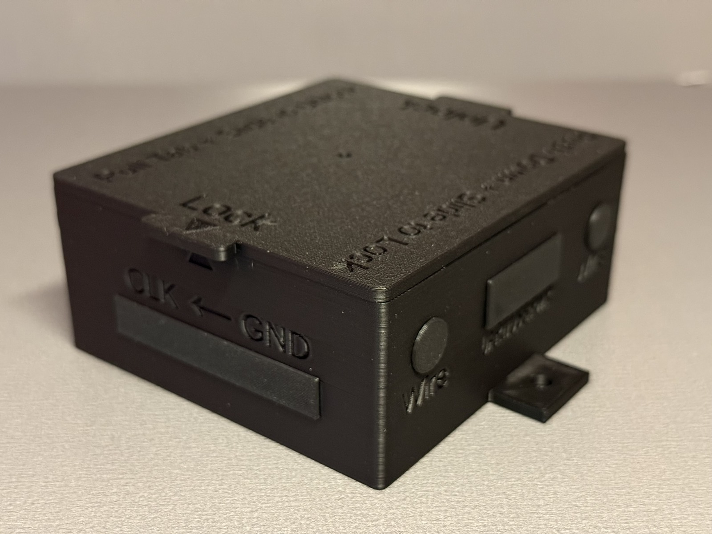

WestTech Home Automation • Tindie documentation
Scout Enclosure Documentation
Reference information for Scout 30 and Scout 38 ESP32 enclosure listings on Tindie, updated to match the current WestTech Home Automation product wording and photo set.
Overview
What Scout is
Scout is the compact WestTech Home Automation enclosure family for smaller indoor ESP32 and automation projects where a clean, serviceable enclosure matters more than extra internal room.
Best fit
Scout is a strong fit for DIY projects, compact control applications, sensor nodes, and customers who want a clean enclosure they can use almost anywhere they have power.
Models covered
| Model | Board / layout | Approx. overall size | Notes |
|---|---|---|---|
| Scout 30 SCOUT-30 |
Compatible 30-pin ESP32 breakout-board layouts | 4.25 in × 4.49 in × 1.77 in (108 × 114 × 45 mm) | Compact Scout footprint for smaller indoor builds. |
| Scout 38 SCOUT-38 |
Compatible 38-pin ESP32 breakout-board layouts | 4.65 in × 4.49 in × 1.77 in (118 × 114 × 45 mm) | Compact Scout footprint with support for the larger 38-pin board format. |
Dimensions include the installed lid, lid overhang, and mounting tabs. Exact listing options may vary by active Tindie product listing.
Unloaded and Loaded wording
Unloaded for your hardware plan
Unloaded is the bring-your-own-hardware path for customers who already know their electronics plan and need the printed enclosure family that fits the project.
- Includes the printed enclosure, lid, brass threaded inserts, standard enclosure hardware, and matched insert layout.
- Electronics and firmware are not included unless specifically stated in the Tindie listing.
Loaded with Quick Start firmware
Loaded is the pre-assembled path for customers who want the selected ESP32 and breakout-board hardware path handled before shipment.
- Basic diagnostics are completed before shipment.
- WestTech Home Automation ESP32 Quick Start firmware helps customers find, connect, verify, and prepare the device before uploading their own project firmware.
- OLED displays, buzzers, sensors, wiring, and power supplies are optional/reference hardware unless the listing specifically includes them.
Printed material and serviceability
PLA+ 2.0 printed parts
Scout enclosures are printed in PLA+ 2.0 and are intended for indoor use. The material choice keeps the enclosure practical for clean indoor automation builds without presenting it as outdoor, wet-location, or high-heat rated.
Brass threaded inserts
Current WestTech Home Automation enclosures use brass threaded inserts at key mounting points. The inserts make the enclosure easier to assemble, reopen, service, and reuse during future hardware changes without wearing out printed plastic screw holes.
Current family photos
Photos show current WestTech Home Automation product examples. Finish color, child layout, and included electronics depend on the exact Tindie listing selected.




Compatible hardware examples
These photos show example hardware that can go inside compatible builds. Optional hardware such as OLED displays or buzzers is only included when the listing specifically says it is included.


Support and reference links
Use the Tindie message system for questions tied to a Tindie order. General documentation and support are also available from the official WestTech Home Automation website.